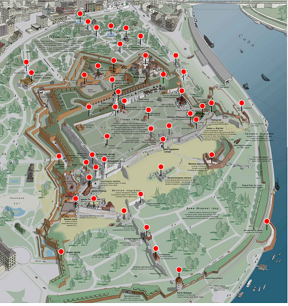
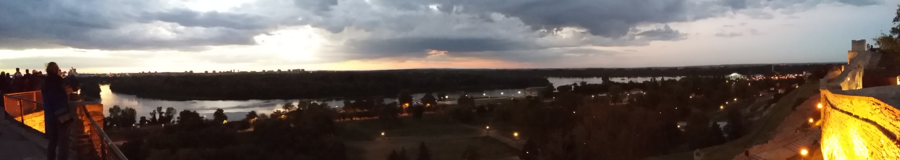

Serbie 2018
Belgrade (Mardi, 25 septembre 2018)
Parc de Kalemegdan
"Kalemegdan" signifie en turc "château de combat, forteresse". Un monument, à l'entrée du parc indique que ladite forteresse fut remise par les Turcs au Prince Michel Obrenović (celui de la rue Kneza Mihaila) en 1867. Le Parc a été aménagé progressivement entre 1873 et 1931, bien peu de temps, comparé a celui que dura l'édification de la forteresse : du 1er siècle de notre ère au XVIIIème siècle.
Les Français se doivent d'aller admirer le
Monument de la reconnaissance à la France
pour son soutien à la Serbie dans la première guerre mondiale, orné d'une inscription "Volimo Francusku kao što je ona nas volela", "Aimons la France comme elle nous a aimés" (actuellement en cours de restauration: les informations relatives à ce chef d'œuvre du Croate (!)
Ivan Meštrović
, sont données sur un panneau en...anglais.
C'est également à Meštrović que l'on doit le
Monument au Vainqueur
qui commémore la victoire des Serbes au mont Cer lors de la Première Guerre mondiale.
Le
Tombeau des Héros nationaux
de Kalemegdan (Grobnica narodnih heroja) a été construit au pied du mur de soubassement de la forteresse, face à la Save, en 1948, pour abriter les dépouilles d'Ivo Lola Ribar (1916-1943) et d'Ivan Milutinović (1901-1944), plus tard rejointes par celles de Đuro Đaković (1886-1929), en 1949 et celle de Moša Pijade (1890-1957) en mars 1957. Plus personne apparemment ne rend visite à ces piliers du titisme. Il en est du communisme comme de la langue et de la culture françaises: il n'y a plus guère qu'en France qu'on les pratique.
Plus affligeant encore est le sort d'une
croix commémorant la fraternité d'armes des Serbes et des Russes
au cours de la première guerre mondiale, érigée en 2014 à l'initiative d'autorités religieuses des deux pays. La figure de bronze représentant Saint Georges qui ornait le centre de la croix de granit a été volée en septembre 2016. Les voleurs s'en étaient pris en 2015, à la colombe, un élément de la sculpture
"l'Eveil"
, un des joyaux du parc.
|
 |

|
Le parc et la forteresse de Kalemegdan
La forteresse de Kalemegdan
- un castrum romain au IIème siècle,
- un château byzantin du VIème au XIIème siècle,
- la capitale fortifiée du Despotat de Serbie du XIIIème au XVème siècle
- en alternance, une citadelle ottomane et
- une place-forte autrichienne aux XVIIème et XVIIIème siècles.
- Les Serbes de Karageorges s'en emparèrent en 1807 jusqu'en 1813.
Quand la Principauté de Serbie devint complètement indépendante en 1868, le prince Michel Obrenović reçut symboliquement des Turcs les clés de la forteresse.
On distingue
- la forteresse haute qui présente un appareil complexe de murs, de tours et de portes et
- la forteresse basse, très étendue avec la Tour Nebojsa, la tour Jakšić - Kula, la Porte de Charles VI, d'origine autrichienne, tandis que la Porte de Vidin et le hammam sont des constructions ottomanes. Elle abrite en outre deux petites églises, l'église métropolite et le monastère franciscain ayant été détruits par les Turcs en 1521.
Le principal monument de l'ensemble est le monument "Le Vainqueur" d'où on a une vue magnifique sur la Save, Novi Beograd, la Grande Île de la Guerre et le Danube.
BALAYER L'IMAGE CI-DESSOUS POUR AFFICHER LES PHOTOS DU PANORAMA
